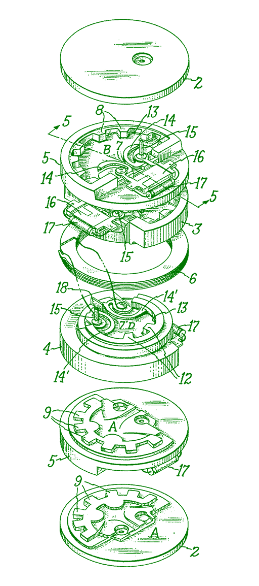

- Joy of acceptance test automation with Cucumber - Marit van Dijk
- Developing after 50: how to avoid becoming a manager - Ton van Bart
- An ode to technical debt - Egbert Teeselink
- Lessons learned from my daughter during our learn to code journey - Ella & Bas Jansen
- The joy of coding an adventure room - Erik Mulder
- Quantum computing’s developer perspective - Angelo van der Sijpt
- What’s so serious about that game? - Stanislava Potupchik
- An exceptional hello world - Tjeerd Hans Terpstra
- Being the new kid in tech - Aisha Sie (cancelled)
